OVERVIEW
-
Understanding Kosovo’s surface through sub-pixel analysis and extraction of surface material information with unmixing (used to account for mixed pixels, with more than one surface present within the pixel)
difficulties in getting actual boundaries of Kosovo as state not recognised by FOA and GAUL classification
Getting SNIC clustering to information on areas with similar characteristics within the country
-
classification results are influenced by elements other than surface contents, with factors such as cloud presence. In our analysis of Kosovo, cloud cover happened to be classified as ‘urban’ areas
- even when cloudy areas were accounted for, mis-classification was still an issue and was a technical limitation in our analysis
- Areas identified as ‘urban’ where not in reality when checking on true colour satellite imagery
adding a mountainous region as reference area does not bring considerable advantages in sub-pixel and object level classifications
Tools being developed to provide real time updates on the earths surface and provide representative information on LULC. New platforms such as Dynamic world allow facilitated processing of this data
Novel Techniques - Dynamic World Example
In this entry, we look at some slightly more advanced and novel techniques of classifications and topography understanding techniques, facilitated through GEE. A primary example of this is the Dynamic World project which aims to provide real-time data-sets of the physical material on the surfaces of the earth, compared to the traditional methods which had substantial lag times and were updated annually and inconsistent between image processing and data release ( Brown et al. (2022) ).
This project implementation has been successful and personally believe that the framework will be successful for better understanding of our environment. Dynamic world provides more detailed data than ever before which allows for better understanding of LULC and its evolution over time.
Defining the study area
This week we decide to focus on a politically difficult and unstable area: Kosovo. As it is not a recognised country by all authorities, it is difficult to work with. In our case, the regions were considered part of Serbia and we had to find a workaround in order to make clear boundaries. We circle in red the areas which are currently considered as Kosovan territory:
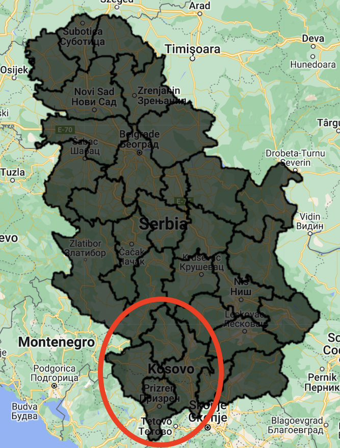
Thanks to community help we were able to get a union of multiple polygons through the following code with the inList argument allowing us to select multiple areas, which in our case delimitate Kosovo (code available here):
Below we include Kosovo with both the district boundaries and with the boundaries of the country as a whole:
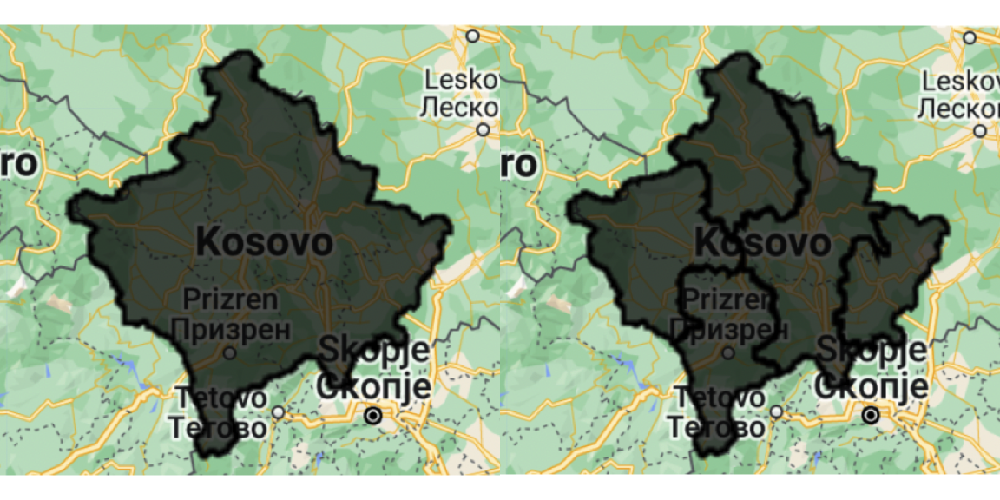
Using Landsat imagery
We proceed to provide a true RBG image of the study area. We do so by selecting areas with less than 1% cloud cover. Yet, we realise that even within a large amount of time (between January and October 2022), there are certain tiles in the study area that do not have any observations with less than 1% cloud cover.
- we keep the 1% cutoff but we increase the study period to include January 2021 to October 2022)
- in this case we see that not all tiles for the study area are available
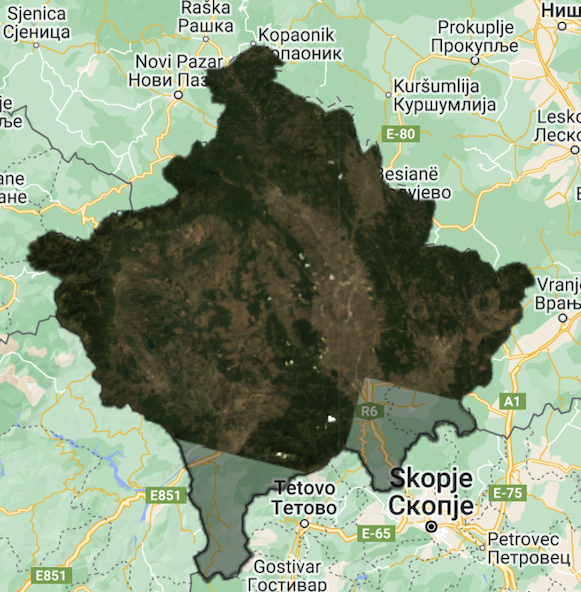
- or we either take area over the same time period with less than 5%
- in this case have considerable clouds on the left mountainous regions of Kosovo which could impede further analysis
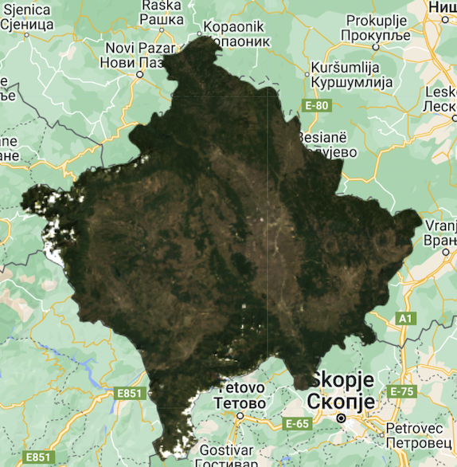
We decide to go with a study timeframe from January 2021 to October 2022, which provides us with a true cloudless image:
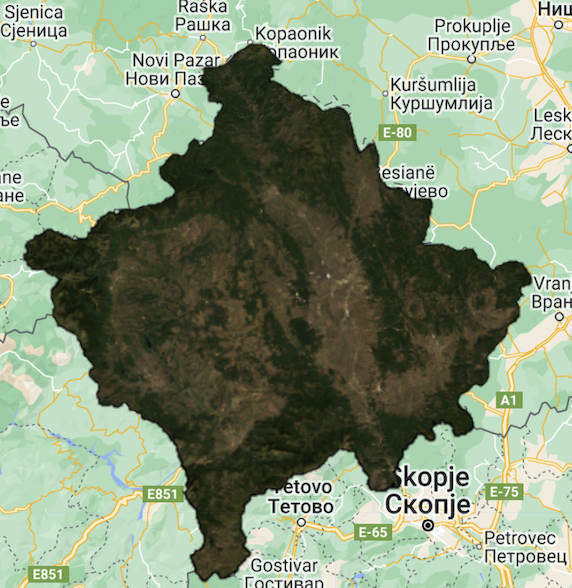
Analysing the images
Sub-Pixel Classification
In order to conduct sub-pixel classification, we first need to conduct spectral unmixing. Unmixing has been proven to allow for accurate extraction of surface material information ( Sun, Du, and Xiong (2017) ).
We add 5 different reference areas to account for the different terrains present in Kosovo:
Urban
Water
Forest
Bare Earth
( Mountainous - we tried to include mountainous regions here as the southern and western Kosovo are areas with a lot of mountainous terrain. We thought that including this in our studied area may provide more input but this was not the case as too similar with ‘Bare Earth’ and we then decided to regroup the two categories. )
As previously, we included two runs of the sub-pixel analysis: one with the 5% cloud cover (but over a shorter period of time) and with 1% (over nearly two years).
Our initial results are with the 5% cloud image are encouraging but present several issues
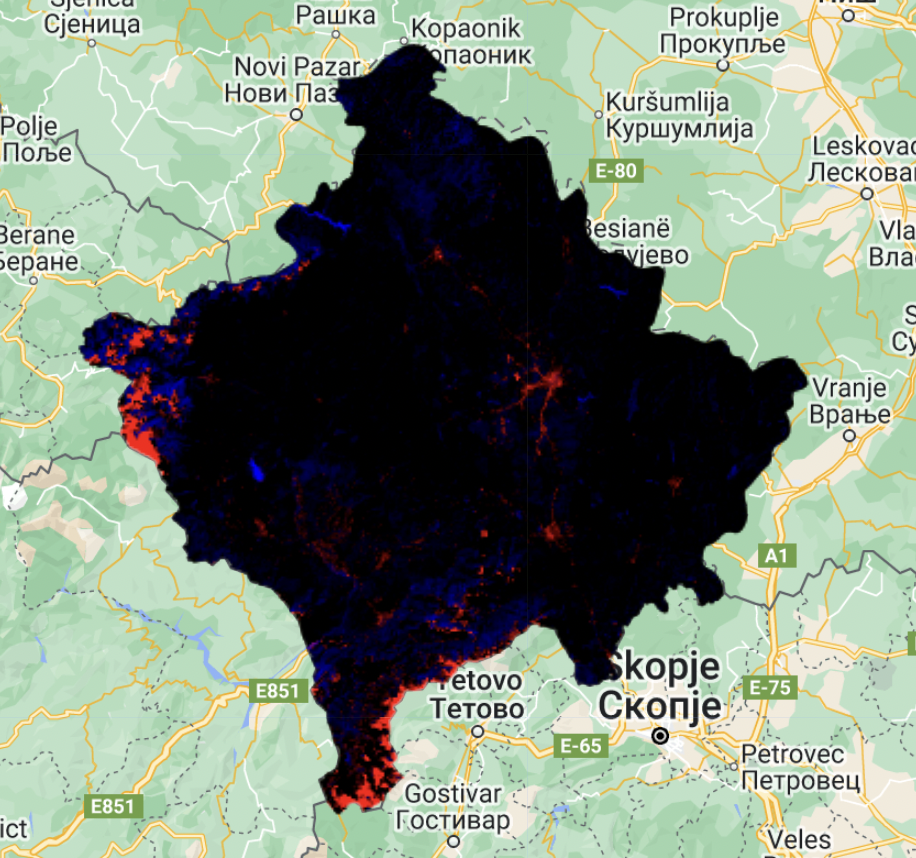
Although the urban areas are well defined, classified in red, we see that many of the cloudy areas in the south and west are also classified as containing urban areas when this is not actually the case
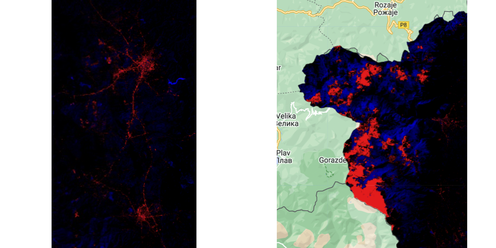
We run the analysis again using the 1% cloud cover image and the results are more encouraging
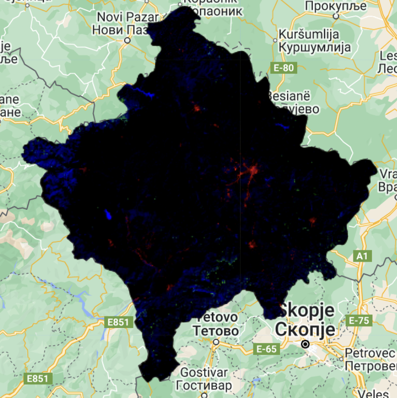
Green areas are now visible, which was not the case before hand. These areas represent ‘bare earth’ and ‘mountainous areas’.
We chose to regroup them as they were too similar and did not provide additional insight. The dark areas are areas which were not able to classified correctly as they did not contain sufficient terrain information to make accurate inference on the surface area (i.e. area was not able to be fully categorised into a single area)
Kosovo’s capital, the Urban area of Prisitna, is clearly defined in the classification task, with the agricultural areas defined to it’s right in green.
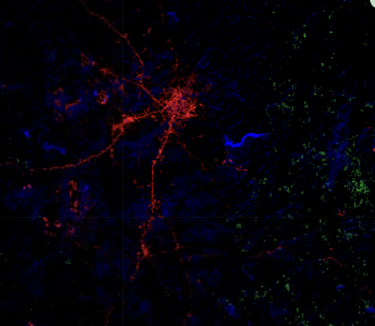
We also witness improvements in the mountainous regions, were previously the snow and clouds were confused as urban areas, and is no longer the case
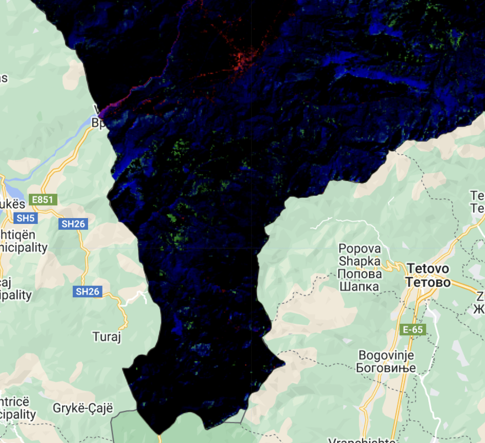
Visualising how Kosovo was classified
We used two criteria of re-classification, comparing how the results change when the results are filtered. The first image provided has a pixel criteria of 0.5 and the second of 0.7. This means that when a pixel has more than 0.5 or 0.7 proportion of a certain land area, it will be classified as such.
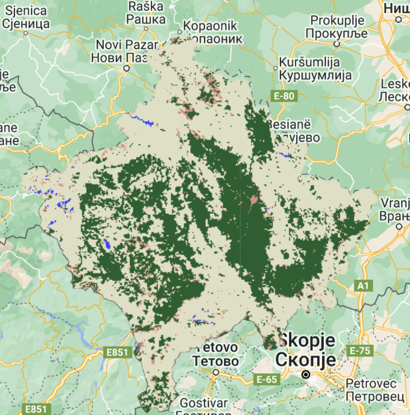
Above, the different areas are quite well delimitated, as we can see delimited urban areas (pastel), bare earth/farmland (green), forest/mountain areas in beige and water (blue).
On the other hand, when using the 0.7 criteria, the image gets more confusing and the delimitations less clear
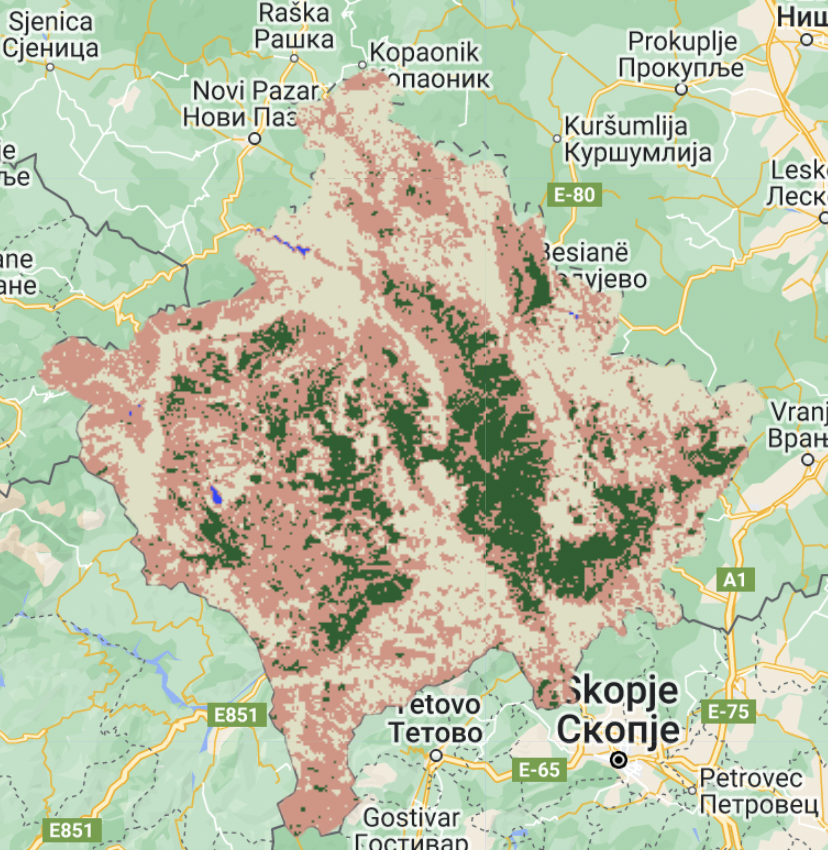
Framework for accuracy assessments
We could use the reclassified areas and run Machine models to predict the number of correctly classified areas:
make ground truth data in the study area by classifying areas (either manually or through other forms)
use MESMA (Multiple end-member spectral mixture analysis) method to map land cover ( Dennison and Roberts (2003) )
these techniques allow to provide accuracy assessments of the study area
Clustering methods
Finally, we include the SNIC (Simple Non-Iterative Clustering) to identify different clusters in the surface area characteristics
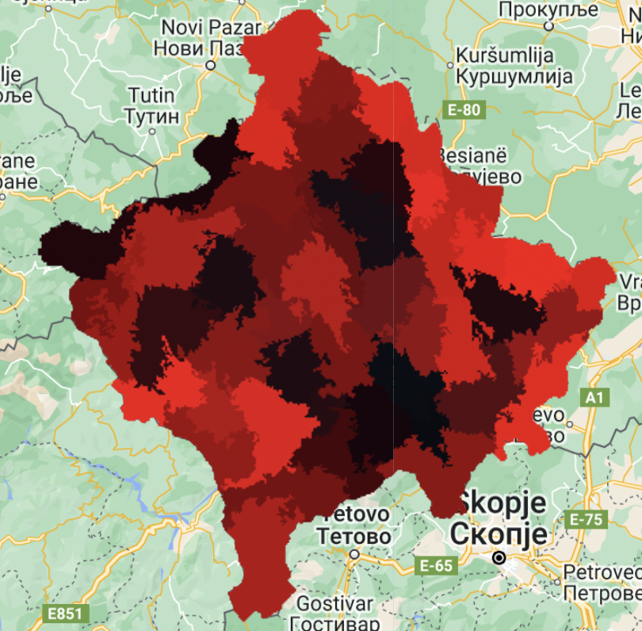
Personal Reflection
Study Area issues
It was interesting to note that in the GAUL data-set available on GEE, we cannot use ‘Pristina’, Kosovo’s Capital, as a study area. Although internationally recognized, this area does not appear in neither Level 1 or 2 nomenclature, which was an interesting discovery and illustrates possible limitations in the use of GAUL and GEE.
We also find some issues in the notation, as Kosovo is not recognised as a country, it makes working with the relevant shapefiles very difficult. The regions used to create the country shapefile were difficult to find and didn’t really have much continuity. The relevant ADM1_name codes used for this are 'Kosovsko-pomoravski', 'Kosovski', 'Kosovsko-mitrovatski', 'Pecki', 'Prizremski' but this is not logical notation, as it does not follow Kosovo’s current nomenclature. For example, the capital region is called ‘Kosovski’ in the GAUL dataset and Serbian Authorities, but ‘Pristina’ by the Kosovo government.
Limitations in the quality of the model
In our case, by Selecting Kosovo, we took a country that has been under considerable political tension for the past decades. This entails population displacement and boundary issues, but it also influences the way in which people live in the country. For example, Kosovo has a low urbanization rate, at approx. 50%, (source: UN) compared to other European continent countries such as France and UK having higher rates at respectively 81% and 84% (source: Statista). This implies that in our sub-pixel analysis, and classification methods more generally, the urban areas are not as dense populated and do not represent perfectly an urban environment. Indeed, pixel in areas which we classy as urban may not be fully urban, meaning this could lead to certain miss-classifications.
We have an example of this in our analysis, near the “white Drin” river, where the sub-pixel spectral unfixing indicates signs of urban settlements near the river, which is not the case when looking at direct satellite imagery:
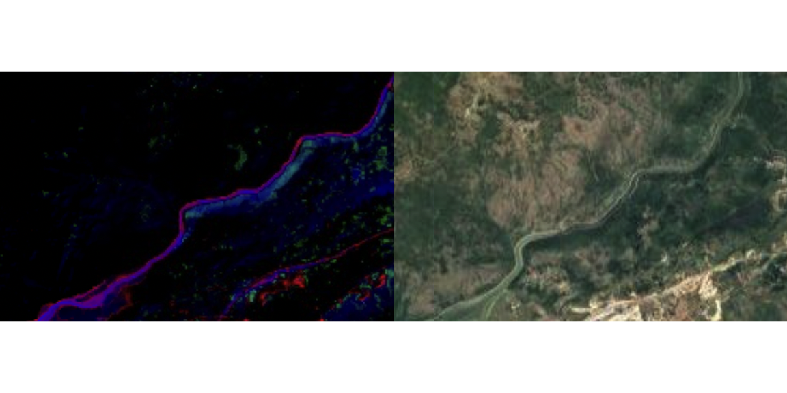
Cloud recognition in snowy/mountainous areas
Although cloud identification is a major concern in remote sensing, and much research has focused on identifying clouds precisely, not having the algorithm confuse it with other elements such as snow ( Zhu and Woodcock (2014), Li et al. (2022) etc.) . In the snowy areas of Kosovo, we observed this to be the case as our cloud algorithm confused between these elements
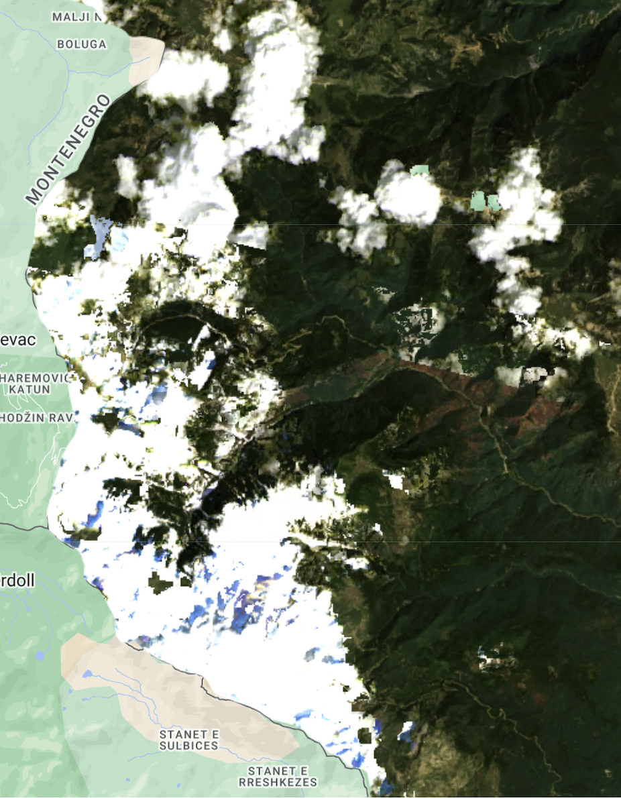
As our work uses Landsat imagery, would look to use other algorithms such as F-mask and T-mask. F-mask uses single-date imagery and T-mask uses extra temporal information to fill in the missing information (Zhu and Woodcock (2014)). Specifically, this would be to continue our study of the area and monitor land cover change!